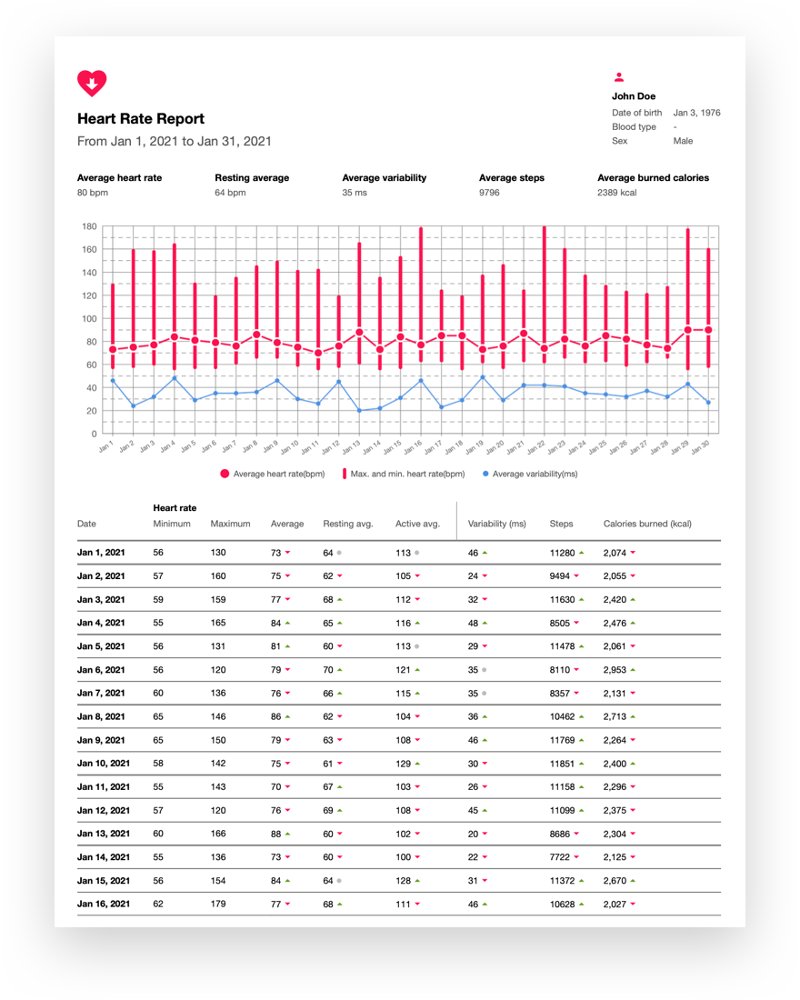

Report

Your ideal report should look like this

You should take these steps to improve your wellbeing
1. Take Proper Sleep:
It may seem to be the most common advice, but trust me most of the people dont follow the basic strep towards their overall wellbeing. Our body needs proper sleep and rest to heal and renew the energy to function properly. This healing is essential for physical and mental activity throughout the day.
Sufficient sleep regulates the hormones that are directly related to our mood and emotions. Most often when you feel an irritated or emotional imbalance, chances are high that your body lacks in taking enough sleep. An adult body needs nearly 6 to 7 hours of sleep per day. So make sure you take enough sleep.
2. Eat a Balanced Diet:
Sleep alone is not going to give you the required benefits. You need to eat a healthy and balanced diet and ensure your body receives enough amount of nutrition. The food you consume determines how healthy your inner system is. Moreover, it also helps in determining your emotional health and mental illnesses such as depression.
When your body lacks essential nutrients, it leads to serious health problems. Moreover, you end up facing emotional distress and anxiety. Health and wellness experts suggest that you should eat fruits and vegetables in sufficient amount. Moreover, eating nuts and lentil also strengthens your heart. Try to avoid caffeine, sugar and processed food as much as possible.
3. Expose Your Body to Sunlight:
Vitamin D deficiency leads to several problems such and Seasonal Affective Disorder or SAD. When you are exposed to sunlight, it causes the release of endorphins also called ‘happiness hormones’ that is responsible for the productivity of the brain.
So, take some time out of your routine and spend some time in sunlight. But makes sure you wear sunblock to prevent sunburn.
4. Deal with Stress:
Although it is difficult to avoid stress nowadays, however, it is definitely possible to deal with it. It is very important to learn to deal with stress in a smart and effective way. For that, try to avoid the situations that cause stress. If your stress is unmanageable, note down the causes of stress as well as what actions can you take to improve your reaction, mood, and even situation?
5. Exercise Daily:
When you remain physically active and exercise daily, your blood flow improves in your entire body. With the increased blood flow, the number of oxygen increases and you feel more energetic, fresh and mentally active.
Exercises and physical activities are more important if you are an office worker. Exercise not only ensures our body remains fit but also keeps your mind healthy as well. You don’t have to join expensive gyms for that. A simple walk with your pet or daily morning walk is more than sufficient. The important thing is to make it a daily habit.
In addition to your mental health, exercise strengthens your bones and muscles that prevent you from a different type of personal injuries during a workout or running your daily errands.
6. Stay Away from Smoking and Alcohol:
If you keep drinking and smoking, no matter how much you spend on your health and how hard you try, your efforts are going to be wasted.
Quit smoking and drinking to ensure you lead a healthy life.
7. Be Social, as Much as You Can:
Isolation and lack of communication are the two biggest reasons for depression, mental and physical illnesses. No matter how busy your family and work life is, try to dedicate some time to friends and socialise with them.
A man cannot stay healthy without interacting with other people. Communicating with others lowers the stress level. If you have heard of laughter therapy, it also has the same purpose to reduce the stress in which you laugh with other people. Everyone needs acceptance and friendship that is fulfilled only when you socialise with others.
8. Find and Practice New Hobbies:
Hobby helps us keep busy and engaged. When you have an interest in some activities and enjoy doing them, you take healthy steps to improve your emotional wellbeing. It also keeps the work and daily life’s pressure off your brain. Finding new hobbies is great for strengthening your brain and boost your mood.
9. Learn to Live in the Present:
The biggest reason for experiencing mood swings, depression and anxiety are when a person remains stuck in past events. Negative self-talking such as ‘why people did this to me’ steal not only the happiness but make the person miss opportunities that the present moment tires to offer.
Learn to live in the present moment and try not to think too much about the future.
Its Simple: Laugh and Enjoy!
Dont take life too seriously. Those who remain happy, smile more and try to keep themselves happy experience better quality of life than those who remain worried all the time. According to a study, children laugh 200 times a day while adults laugh 15 times a day.
Staying happy and laughing more is essential for a quality life.